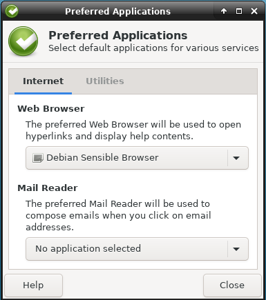

yeah thats why better to disable them by default.
-
OnionShare tested and its working!
-
Ricochet Debian doesnt boot up: (expected ending)

yeah thats why better to disable them by default.
OnionShare tested and its working!
Ricochet Debian doesnt boot up: (expected ending)
Great!
Fixed.
Fix in all buster repositories.
Actual ricochet connectivity test has not been done by me. Would be nice if you could test.
qtox:
IPv6 might even work. (See IPv6 tests in Tor Browser.)
(Above commit works for new builds only because it is in /etc/skel.)
Proxy settings cannot be applied by default. Related bugs:
We also cannot use torsocks, bug reported:
Add Workspace Switcher by default because if you open TBB and then open file manager and then press/hold the file manager top bar and go left of the screen then TBB page will disappear. it didnt disappear actually but the file manager window went to a new workspace. and in order to see all the work spaces you need to add workspace switcher plugin to the taskbar by default.
right click on the taskbar -> go to Panel -> Add New Items -> Workspace Switcher
then move the workspace switcher near to the browser icon (left) for better control.
sudo apt install --reinstall ricochet-im
fixed the issue for me.
Feature for new comers:
Make PulseAudio Plugin visible by adding it to the taskbar/Panel in WS.
Ricochet giving false claims that its working but its not.
http://forums.dds6qkxpwdeubwucdiaord2xgbbeyds25rbsgr73tbfpqpt4a6vjwsyd.onion/t/ricochet-support/7174
CoyIM tested and working here fine. Accounts can be created staright away and I’m logged into them as online.
how? it got fixed or it just worked with you?
I just used it normally and clicked register account and it works as expected. Just did it again now.
The hanging connection to the server you saw might be a network connectivity problem at the exit node, or a request throttling done to prevent spammers from that exit’s IP.
EDIT:
Let’s try to connect with coyIM too because there was a bug in the version in Stretch which kept making coy forget added contacts.
well this is my tested results (impossible to continue)
OK, finally got a Whonix 15 running.
First thing I notice is both Gateway and Workstation have a GUI whonixcheck error right after first-run wizards finish:
WARNING: Debian Package Update Check Result: Could not check for software updates! (Timeout reached.) (apt-get code: 124)
Please manually check:
(Open a terminal, Start Menu -> System -> Terminal.)
Manual apt update / dist-upgrade commands work fine in terminal though.
BTW, should we move from apt-get to apt?
I read last week that the Debian world is moving in the direction of suggesting apt by default and that best practice is such that apt-get should only be used if necessary for a function that apt itself can’t provide (similar to aptitude does over apt-get). It would be neater and less daunting for the user to work with.
AnonymousUser via Whonix Forum:
BTW, should we move from
apt-gettoapt?I read last week that the Debian world is moving in the direction of suggesting
aptby default and that best practice is such thatapt-getshould only be used if necessary for a function thataptitself can’t provide (similar toaptitudedoes overapt-get). It would be neater and less daunting for the user to work with.
Citation would be useful. We can consider this after Whonix 15 stable
release.
Yeah I couldn’t find it that time, but found it now. It was this article:
So it seems apt is a little more user-friendly (in general) and is in Debian by default.
It shows in a table that apt-get dist-upgrade -> becomes -> apt full-upgrade.
Annoying that apt, apt-get and aptitude are all slightly different with different pros vs. cons, but at least we have choice for different situations. I had to use the deluxe aptitude to install a particularly difficult-to-install package that required sid repo dependencies on a Tails Debian the other week.
Further links that look useful:
https://debian-handbook.info/browse/stable/sect.apt-get.html
On a new fresh pair of 15.0.0.0.7 VMs, the above error doesn’t happen. Perhaps it was a connection issue.
There are new stuff Questionable and Bug:

Full log:
ERROR: whonix_firewall failed to load!
The whonix_firewall failed to load for some reason. This could be due to the firewall being mis-configured or race-condition. Try restarting the VM to see if this error persists.
Failure file /var/run/anon-firewall/failed.status does not exist, ok.
output of sudo systemctl status whonix-firewall:
########################################
● whonix-firewall.service - Whonix firewall loader
Loaded: loaded (/lib/systemd/system/whonix-firewall.service; enabled; vendor preset: enabled)
Active: active (exited) since Wed 2019-06-05 08:35:24 UTC; 33s ago
Docs: https://www.whonix.org/wiki/Whonix_Firewall
Process: 1503 ExecStart=/usr/lib/whonix-firewall/enable-firewall (code=exited, status=0/SUCCESS)
Main PID: 1503 (code=exited, status=0/SUCCESS)
Jun 05 08:35:22 host enable-firewall[1503]: OK: SDWDATE_USER: 108
Jun 05 08:35:22 host enable-firewall[1503]: OK: WHONIXCHECK_USER: 111
Jun 05 08:35:22 host enable-firewall[1503]: OK: NO_NAT_USERS: 109 106 105
Jun 05 08:35:24 host enable-firewall[1503]: OK: The firewall should not show any messages,
Jun 05 08:35:24 host enable-firewall[1503]: OK: besides output beginning with prefix OK:...
Jun 05 08:35:24 host sudo[2131]: root : TTY=unknown ; PWD=/ ; USER=sdwdate ; COMMAND=/usr/bin/tee -a /var/log/sdwdate.log
Jun 05 08:35:24 host sudo[2131]: pam_unix(sudo:session): session opened for user sdwdate by (uid=0)
Jun 05 08:35:24 host enable-firewall[1503]: 2019-06-05 08:35:24 - /usr/bin/whonix-gateway-firewall - OK: Whonix firewall loaded.
Jun 05 08:35:24 host sudo[2131]: pam_unix(sudo:session): session closed for user sdwdate
Jun 05 08:35:24 host systemd[1]: Started Whonix firewall loader.
########################################
output of sudo journalctl -u whonix-firewall:
########################################
-- Logs begin at Wed 2019-06-05 08:33:00 UTC, end at Wed 2019-06-05 08:35:57 UTC. --
Jun 05 08:35:03 host systemd[1]: Starting Whonix firewall loader...
Jun 05 08:35:03 host enable-firewall[258]: OK: Loading Whonix firewall...
Jun 05 08:35:05 host sudo[275]: root : TTY=unknown ; PWD=/ ; USER=sdwdate ; COMMAND=/usr/bin/tee -a /var/log/sdwdate.log
Jun 05 08:35:05 host sudo[275]: pam_unix(sudo:session): session opened for user sdwdate by (uid=0)
Jun 05 08:35:05 host enable-firewall[258]: 2019-06-05 08:35:03 - /usr/bin/whonix-gateway-firewall - OK: Skipping firewall mode detection since already set to 'full'.
Jun 05 08:35:05 host sudo[275]: pam_unix(sudo:session): session closed for user sdwdate
Jun 05 08:35:05 host sudo[420]: root : TTY=unknown ; PWD=/ ; USER=sdwdate ; COMMAND=/usr/bin/tee -a /var/log/sdwdate.log
Jun 05 08:35:05 host sudo[420]: pam_unix(sudo:session): session opened for user sdwdate by (uid=0)
Jun 05 08:35:05 host enable-firewall[258]: 2019-06-05 08:35:05 - /usr/bin/whonix-gateway-firewall - OK: (Full torified network access allowed.)
Jun 05 08:35:05 host sudo[420]: pam_unix(sudo:session): session closed for user sdwdate
Jun 05 08:35:05 host enable-firewall[258]: OK: TOR_USER: 105
Jun 05 08:35:05 host enable-firewall[258]: OK: CLEARNET_USER: 109
Jun 05 08:35:05 host enable-firewall[258]: OK: USER_USER: 1000
Jun 05 08:35:05 host enable-firewall[258]: OK: ROOT_USER: 0
Jun 05 08:35:05 host enable-firewall[258]: OK: TUNNEL_USER: 106
Jun 05 08:35:05 host enable-firewall[258]: OK: SDWDATE_USER: 108
Jun 05 08:35:05 host enable-firewall[258]: OK: WHONIXCHECK_USER: 111
Jun 05 08:35:05 host enable-firewall[258]: OK: NO_NAT_USERS: 109 106 105
Jun 05 08:33:03 host enable-firewall[258]: OK: The firewall should not show any messages,
Jun 05 08:33:03 host enable-firewall[258]: OK: besides output beginning with prefix OK:...
Jun 05 08:33:03 host sudo[800]: root : TTY=unknown ; PWD=/ ; USER=sdwdate ; COMMAND=/usr/bin/tee -a /var/log/sdwdate.log
Jun 05 08:33:03 host sudo[800]: pam_unix(sudo:session): session opened for user sdwdate by (uid=0)
Jun 05 08:33:03 host enable-firewall[258]: 2019-06-05 08:33:03 - /usr/bin/whonix-gateway-firewall - OK: Whonix firewall loaded.
Jun 05 08:33:03 host sudo[800]: pam_unix(sudo:session): session closed for user sdwdate
Jun 05 08:33:03 host systemd[1]: Started Whonix firewall loader.
Jun 05 08:35:22 host systemd[1]: whonix-firewall.service: Succeeded.
Jun 05 08:35:22 host systemd[1]: Stopped Whonix firewall loader.
Jun 05 08:35:22 host systemd[1]: Stopping Whonix firewall loader...
Jun 05 08:35:22 host systemd[1]: Starting Whonix firewall loader...
Jun 05 08:35:22 host enable-firewall[1503]: OK: Loading Whonix firewall...
Jun 05 08:35:22 host sudo[1517]: root : TTY=unknown ; PWD=/ ; USER=sdwdate ; COMMAND=/usr/bin/tee -a /var/log/sdwdate.log
Jun 05 08:35:22 host sudo[1517]: pam_unix(sudo:session): session opened for user sdwdate by (uid=0)
Jun 05 08:35:22 host enable-firewall[1503]: 2019-06-05 08:35:22 - /usr/bin/whonix-gateway-firewall - OK: Skipping firewall mode detection since already set to 'full'.
Jun 05 08:35:22 host sudo[1517]: pam_unix(sudo:session): session closed for user sdwdate
Jun 05 08:35:22 host sudo[1522]: root : TTY=unknown ; PWD=/ ; USER=sdwdate ; COMMAND=/usr/bin/tee -a /var/log/sdwdate.log
Jun 05 08:35:22 host sudo[1522]: pam_unix(sudo:session): session opened for user sdwdate by (uid=0)
Jun 05 08:35:22 host enable-firewall[1503]: 2019-06-05 08:35:22 - /usr/bin/whonix-gateway-firewall - OK: (Full torified network access allowed.)
Jun 05 08:35:22 host sudo[1522]: pam_unix(sudo:session): session closed for user sdwdate
Jun 05 08:35:22 host enable-firewall[1503]: OK: TOR_USER: 105
Jun 05 08:35:22 host enable-firewall[1503]: OK: CLEARNET_USER: 109
Jun 05 08:35:22 host enable-firewall[1503]: OK: USER_USER: 1000
Jun 05 08:35:22 host enable-firewall[1503]: OK: ROOT_USER: 0
Jun 05 08:35:22 host enable-firewall[1503]: OK: TUNNEL_USER: 106
Jun 05 08:35:22 host enable-firewall[1503]: OK: SDWDATE_USER: 108
Jun 05 08:35:22 host enable-firewall[1503]: OK: WHONIXCHECK_USER: 111
Jun 05 08:35:22 host enable-firewall[1503]: OK: NO_NAT_USERS: 109 106 105
Jun 05 08:35:24 host enable-firewall[1503]: OK: The firewall should not show any messages,
Jun 05 08:35:24 host enable-firewall[1503]: OK: besides output beginning with prefix OK:...
Jun 05 08:35:24 host sudo[2131]: root : TTY=unknown ; PWD=/ ; USER=sdwdate ; COMMAND=/usr/bin/tee -a /var/log/sdwdate.log
Jun 05 08:35:24 host sudo[2131]: pam_unix(sudo:session): session opened for user sdwdate by (uid=0)
Jun 05 08:35:24 host enable-firewall[1503]: 2019-06-05 08:35:24 - /usr/bin/whonix-gateway-firewall - OK: Whonix firewall loaded.
Jun 05 08:35:24 host sudo[2131]: pam_unix(sudo:session): session closed for user sdwdate
Jun 05 08:35:24 host systemd[1]: Started Whonix firewall loader.
########################################
To see this for yourself...
1. Open a terminal. (Start Menu -> System -> Terminal)
2. Run.
sudo systemctl status whonix-firewall
2. Also see.
sudo journalctl -u whonix-firewall | cat
3. Try to manually start Whonix firewall.
sudo whonix_firewall
If you know what you are doing, feel free to disable this check. Create a file /etc/whonix.d/50_whonixcheck_user.conf and add:
whonixcheck_skip_functions+=" check_whonix_firewall_systemd_status "
TNT_BOM_BOM via Whonix Forum:
- Whonix firewall failed to load (happened multiple times - GW)
This is most likely just a whonixcheck race condition issue since the
output does not contain any actual failure. Should be fixed:
Otherwise there would be an error in journal.
sudo journalctl | catTNT_BOM_BOM via Whonix Forum:
- Apparmor failed to start (GW,WS)
This could be due to ricochet apparmor profile.
After upgrades, you ricochet can be removed (Whonix meta packages do no
longer depend on it.)
These commands might help:
sudo rm -f /etc/apparmor.d/usr.bin.ricochet.anondist
sudo rm -f /etc/apparmor.d/usr.bin.ricochet
- Script Bug (Gone after restart)
Likely due to anon-shared-helper-scripts -> helper-scripts package
rename. If not happening after upgrade/reboot can be safely ignored.


{kind=link}
{kind=link}
{kind=link}